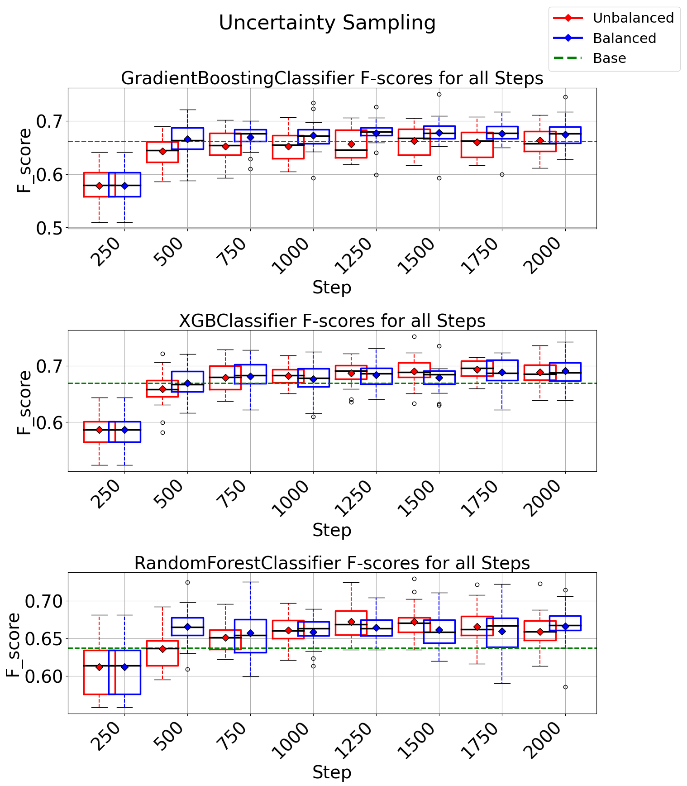

Instrumar's Pipeline for Manufacturing Fault Classification
(Python, Scikit-learn, Pandas)
Description
Developed Instrumar’s Active Learning Pipeline for fault classification in industrial manufacturing
processes.
Automating the identification and classification of production faults
Applied SPC based anomaly anomaly detection techniques for identifying real-life manufacturing
faults that needs to be classified.
Performed domain specific feature generation, selection, and dimensionality reduction methods.
Developed a novel balancement algorithm to address data imbalance challenges inherent in Instrumar’s
time series data, ensuring robust and accurate fault classification.
Implemented multiple active learning strategies to intelligently select the most informative data
samples for annotation, optimizing the training process and reducing annotation cost and time.
Integrated state-of-the-art machine learning models including XGBoost, GradientBoosting Classifier,
and Neural Networks to leverage the power of advanced algorithms for fault classification.
Achieved significant improvements in fault classification efficiency, contributing to enhanced
operational performance and cost savings for Instrumar.
Results

Additional Information
The above work has been accepted for publication in IEEE Systems Conference 2024.
Link